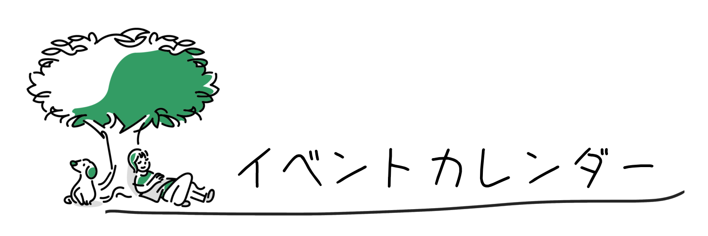

おすすめイベント

利用者の声
-
情報研究科 匿名希望
自己分析セミナーでは自分の過去の経験から好きなタイプを知ることができました！
-
情報研究科 つつつ さん
業界研究セミナーでは各メンバーの特徴を知ることができ、志望業界（推しメン）を見つけることができました！
-
情報研究科 河原達也 さん
選考対策に参加して良かったです！ライブ当日は対策していた曲が披露され、心の中で応援することができました！